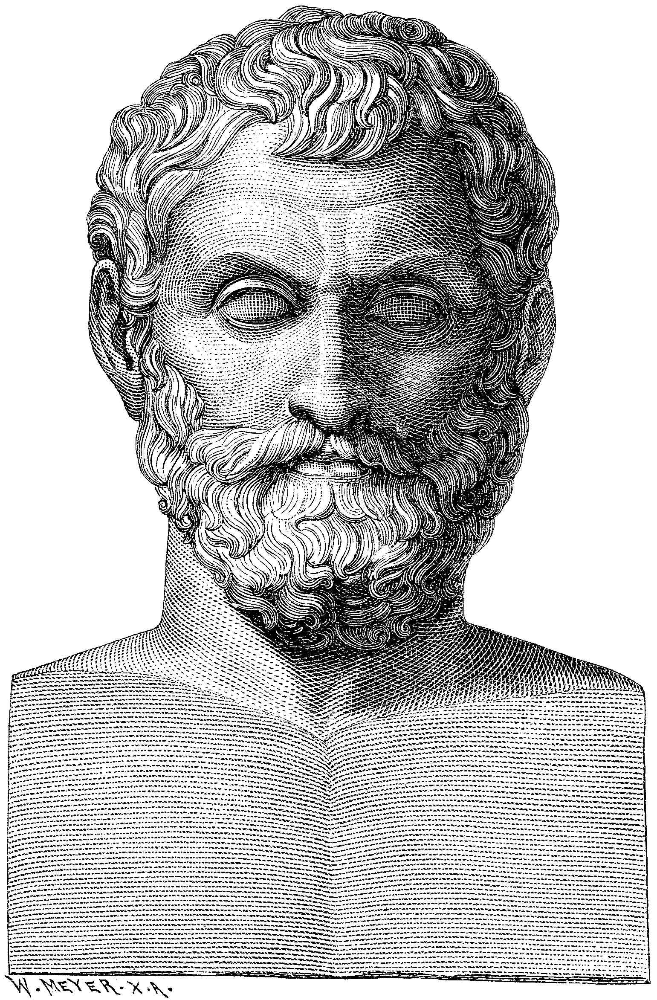

A filosofia, apesar de sua origem na antiguidade, mantém uma relevância surpreendente no mundo contemporâneo, influenciando diversas áreas da vida moderna. Hoje, ela não se limita mais aos debates abstratos sobre a existência ou o conhecimento, mas se manifesta de forma prática em questões éticas, políticas e tecnológicas. Por exemplo, a ética aplicada orienta discussões sobre inteligência artificial, bioética e direitos humanos, garantindo que o avanço científico seja acompanhado de responsabilidade moral.
No campo político e social, a filosofia contribui para a reflexão sobre justiça, democracia e direitos civis, ajudando a moldar políticas públicas e promover debates sobre igualdade e liberdade. Pensadores contemporâneos inspiram movimentos sociais que buscam combater discriminações e garantir a dignidade de todos, mostrando que o pensamento crítico e reflexivo é fundamental para a construção de sociedades mais justas.

Além disso, a filosofia também influencia o desenvolvimento pessoal e profissional, estimulando o autoconhecimento, a capacidade de argumentação e o pensamento crítico. Em um mundo cada vez mais complexo e cheio de informações, a habilidade de questionar, analisar e refletir torna-se essencial para tomadas de decisão mais conscientes, seja no âmbito individual, seja no corporativo.

Portanto, a filosofia aplicada no mundo atual é um instrumento vital para enfrentar os desafios contemporâneos. Ela promove o diálogo entre diferentes saberes, incentiva a responsabilidade ética e oferece ferramentas para a construção de um futuro mais equilibrado e humanizado, provando que o pensamento filosófico é tão necessário hoje quanto foi há milênios.
Elaborado por Adryan Henrique